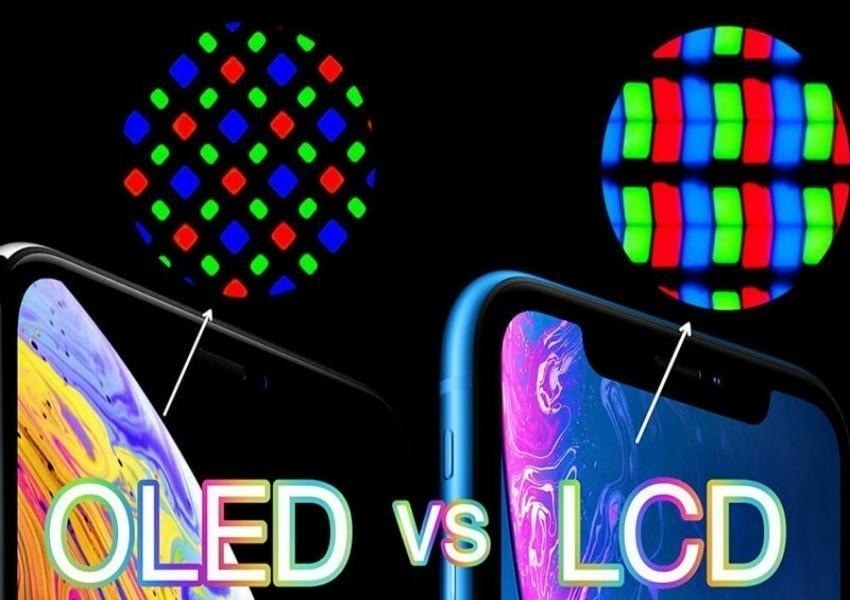

PANTALLAS DE CELULARES
1. Introducción a las Pantallas de Celulares
Al principio los teléfonos móviles no tenían pantalla y solo servían para hacer llamadas pero con la llegada de los primeros modelos digitales
en los años 90 como los Nokia y Motorola se introdujeron pequeñas pantallas monocromáticas que solo mostraban texto como el número que se
marcaba el nivel de batería o los mensajes SMS luego surgieron pantallas de dos líneas y con el tiempo se hicieron más grandes y detalladas
hacia finales de los años 90 y principios de los 2000 comenzaron a aparecer pantallas a color con la llegada de teléfonos como el Siemens S10
y posteriormente modelos como el Sony Ericsson T68i esto permitió mostrar imágenes juegos más atractivos e interfaces visuales más completas
a medida que avanzaban los años las pantallas crecieron en tamaño y resolución se introdujo la tecnología TFT y LCD mejorando el brillo y los
colores en 2007 el lanzamiento del iPhone cambió por completo el papel de la pantalla en los teléfonos móviles ya que presentó una pantalla
táctil capacitiva que eliminó los teclados físicos y permitió controlar todo el dispositivo con los dedos desde entonces las pantallas se
volvieron el componente principal del celular y comenzaron a desarrollarse nuevas tecnologías como OLED AMOLED y Super AMOLED ofreciendo
colores más vivos negros más profundos y menor consumo energético en los últimos años las pantallas han alcanzado resoluciones muy altas como
Full HD 4K o incluso superiores con tasas de refresco de 90Hz 120Hz o más para mejorar la fluidez especialmente en juegos y desplazamiento
también han aparecido las pantallas curvas perforadas e incluso plegables como en los modelos de Samsung Huawei y Motorola lo que ha permitido
cambiar la forma del teléfono y ofrecer experiencias más inmersivas actualmente las pantallas ocupan casi todo el frontal del dispositivo
gracias a los bordes reducidos y se combinan con tecnologías avanzadas como el lector de huellas integrado sensores de brillo y color
inteligencia artificial para ajustar la imagen y funciones multitáctiles todo esto ha convertido a la pantalla en el elemento central de los
smartphones modernos y su desarrollo sigue avanzando hacia pantallas más delgadas flexibles resistentes y con mayor calidad visual.
2. Tipos de Tecnología de Pantallas
En el mercado actual de celulares, predominan varias tecnologías de pantallas, cada una con sus propias características, ventajas y desventajas. Conocerlas es clave para entender las diferencias en calidad visual y consumo energético:
- LCD (Liquid Crystal Display): Fue la tecnología dominante por mucho tiempo. Ofrece una buena visibilidad general y es relativamente económica de fabricar, lo que la hace ideal para teléfonos de gama de entrada y media. Requieren una luz de fondo que ilumina todos los píxeles, lo que puede limitar los negros puros.
- IPS LCD (In-Plane Switching Liquid Crystal Display):Una mejora sobre el LCD tradicional, que ofrece colores más precisos y, sobre todo, ángulos de visión mucho más amplios. Es común encontrarla en la gama media-alta, proporcionando un buen equilibrio entre calidad y costo.
- OLED (Organic Light-Emitting Diode) / AMOLED (Active Matrix Organic Light-Emitting Diode):Estas tecnologías son la elección premium. Cada píxel emite su propia luz y puede apagarse completamente, lo que permite negros perfectos y un contraste infinito. Los colores son extremadamente vivos, y las pantallas son más delgadas y eficientes energéticamente, especialmente al mostrar contenido oscuro.
- Super AMOLED:Una evolución de AMOLED, principalmente desarrollada por Samsung, que integra la capa táctil directamente en la pantalla, lo que resulta en un panel aún más delgado, con mayor brillo y visibilidad bajo la luz solar directa, y un consumo de energía aún menor.
- LTPO (Low-Temperature Polycrystalline Oxide):Es una tecnología más reciente que permite a las pantallas variar dinámicamente su tasa de refresco desde 1Hz hasta 120Hz o más, dependiendo del contenido que se esté mostrando. Esto es crucial para ahorrar batería, ya que la pantalla no necesita refrescarse tan rápido cuando se ve una imagen estática.
La elección de la tecnología de pantalla impacta directamente en el costo, la calidad visual y la duración de la batería del dispositivo.

3. Resolución y Densidad de Píxeles
La resolución de una pantalla se refiere al número total de píxeles que la componen, expresado como el número de píxeles horizontales por el número de píxeles verticales (ej. 1920x1080). Determina el nivel de detalle y nitidez que puede mostrar una imagen. Las resoluciones más comunes en celulares son HD (1280x720), Full HD (1920x1080), Full HD+ (resoluciones ligeramente superiores al Full HD pero manteniendo la misma altura de píxeles) y QHD (Quad High Definition, 2560x1440). A mayor resolución, mayor será la definición y la claridad de los gráficos y el texto.
La densidad de píxeles (PPI - Pixels Per Inch)también es un factor fundamental y está directamente relacionada con la resolución y el tamaño físico de la pantalla. Cuantos más píxeles se agrupen en una pulgada cuadrada, más nítida y "sin píxeles visibles" será la imagen, lo que es especialmente importante en pantallas pequeñas de smartphones donde el ojo humano puede percibir los píxeles individuales si la densidad es baja. Una alta densidad de píxeles contribuye a una experiencia visual más inmersiva y agradable, haciendo que las imágenes y el texto se vean suaves y definidos, similar a la impresión de alta calidad.
4. Tasa de Refresco y Tiempo de Respuesta
La tasa de refresco, medida en Hertz (Hz), indica la cantidad de veces por segundo que la imagen en la pantalla se actualiza. Las tasas más comunes en celulares son 60 Hz, 90 Hz, 120 Hz, e incluso 144 Hz o más en teléfonos gaming. Una tasa de refresco más alta significa que la imagen se actualiza más rápidamente, lo que resulta en una fluidez de desplazamiento notablemente superior, animaciones más suaves y una experiencia general más receptiva. Esto es particularmente ventajoso para juegos y al navegar por contenido con mucho movimiento.
El tiempo de respuesta de un píxel es el tiempo que tarda un píxel individual en cambiar de un color a otro. Un tiempo de respuesta bajo es crucial para evitar el "ghosting" o el desenfoque de movimiento en escenas rápidas. Las pantallas OLED, por su naturaleza autoemisiva, tienen tiempos de respuesta casi instantáneos, lo que las hace superiores para contenido en movimiento rápido y para la experiencia de juego, minimizando cualquier rastro visual o borrosidad.

5. Tendencias Futuras
El futuro de las pantallas de celulares promete innovaciones que seguirán transformando la interacción con nuestros dispositivos. Algunas de las tendencias más emocionantes que ya están en desarrollo o a punto de popularizarse incluyen:
- Pantallas plegables:Dispositivos como los Samsung Galaxy Fold o Flip, y los plegables de otras marcas como Motorola y Huawei, permiten que un teléfono se pliegue para ofrecer una pantalla más grande cuando sea necesario, o para reducir su tamaño y facilitar su portabilidad.
- Pantallas enrollables: Aunque aún en fase de prototipo, las pantallas enrollables prometen extenderse o retraerse de un cuerpo compacto, ofreciendo tamaños de pantalla aún más grandes sin comprometer la portabilidad.
- Cámaras bajo pantalla (Under-Display Cameras - UDC):Esta tecnología busca eliminar completamente los "notch" o agujeros en la pantalla, integrando la cámara frontal de manera invisible debajo del panel. Aunque todavía están en desarrollo, se espera que su calidad mejore significativamente.
- Mejor eficiencia energética:Tecnologías como LTPO seguirán evolucionando para permitir tasas de refresco adaptativas aún más avanzadas, maximizando la duración de la batería sin sacrificar la fluidez. También se investigan nuevos materiales y métodos de fabricación para reducir el consumo.
- Pantallas más duraderas:Con el auge de las pantallas flexibles y la necesidad de proteger los dispositivos, la investigación en materiales más resistentes a caídas y arañazos, como vidrios ultradelgados y polímeros avanzados, será fundamental.
Estas innovaciones buscan no solo mejorar la experiencia visual, sino también redefinir la forma en que los usuarios interactúan con sus smartphones, haciéndolos aún más versátiles e inmersivos.
Tipos de pantallas en celulares:
Fuente:
Soy un link para saber mas acerca de las pantallas moviles :3